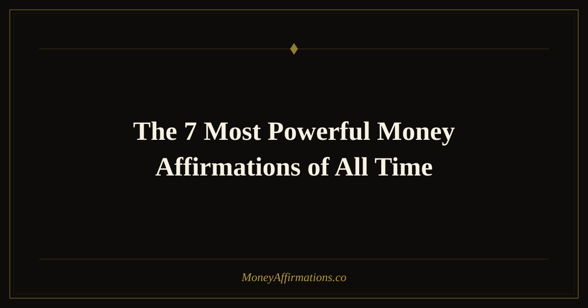

The 7 Most Powerful Money Affirmations of All Time

Not all affirmations are created equal. Some slide off your mind like water on glass — repeated dutifully but never truly absorbed. Others land somewhere deeper, quietly rewriting the story your subconscious tells about money, worth, and what you deserve. This post breaks down seven affirmations that consistently show up as transformative across thousands of practitioners — and more importantly, explains the exact psychological mechanism behind each one so you can use them with intention rather than blind hope.
What Are Powerful Money Affirmations?
A powerful money affirmation does three things at once: it contradicts a limiting belief you actually hold, it anchors the new belief in present-tense identity ("I am" rather than "I will"), and it feels emotionally credible enough that your nervous system doesn't immediately reject it. Weak affirmations feel like lies. Powerful ones feel like a truth you haven't quite caught up to yet — a slight stretch that still sits within reach. The seven below were chosen because they hit all three marks and have stood the test of widespread, repeated use.
The 7 Most Powerful Money Affirmations
- I am a magnet for money, and prosperity flows to me naturally and effortlessly.
This affirmation works because it shifts your identity from someone who chases money to someone money is drawn toward. The word "naturally" disarms the striving, hustle-culture voice in your head and trains your reticular activating system to notice opportunities you would otherwise filter out as irrelevant to you.
- I deserve to be financially abundant, and I receive wealth with gratitude and ease.
Deservability is the most common hidden block in money mindset work. Many people affirm that money is coming while subconsciously believing they haven't earned it yet. This affirmation directly targets that gap, pairing worthiness with a receiving posture — crucial for people who give freely but struggle to accept abundance in return.
- Money is a tool that amplifies my values, and I use it to create real good in the world.
For purpose-driven people, subconscious moral associations with wealth — greed, exploitation, excess — create a powerful internal brake on financial growth. This affirmation neutralizes that by linking money to values and impact, making it psychologically safe to accumulate wealth without feeling like you're betraying your integrity.
- I am financially free, and my money works hard for me every single day.
This statement embeds the concept of passive income and compounding returns into your daily self-concept. It nudges you toward investment thinking — asking "how does my money work?" rather than "how much did I earn?" — which is a fundamental shift in the psychology of wealth-building versus income-earning.
- I release all resistance to money, and I welcome unlimited abundance into my life now.
The word "release" makes this affirmation uniquely powerful — it acknowledges that the barrier is internal, not external, which is both humbling and empowering. Naming resistance as the block, rather than circumstance or luck, returns full agency to you and creates an opening that purely positive statements sometimes can't because they skip over the underlying tension.
- I am worthy of multiple streams of income, and new revenue opportunities find me consistently.
This affirmation does double duty: it addresses worthiness and it plants the specific concept of income diversification into your self-image. People who see themselves as multi-income earners make different daily decisions — they pitch more, explore more, invest differently — long before the income streams actually materialize.
- The more I give, the more I receive, and my generosity creates an ever-expanding cycle of wealth.
Scarcity thinking treats money as a finite pie — giving reduces your share. This affirmation rewires that zero-sum mental model into a circulation model, which is how wealth actually behaves in practice. It also activates the documented psychological benefits of generosity, which reduce financial anxiety and increase the sense of abundance regardless of current account balance.
How to Use These Affirmations Daily
The key is repetition combined with emotional engagement — not rote recitation. Each morning, choose two or three of the seven and say them aloud while looking in a mirror. Speak slowly enough to actually hear the words land. Notice any resistance or inner skepticism that surfaces — that friction is valuable information about where your limiting beliefs live. You can also write them by hand in a journal; the physical act of writing bypasses mental autopilot and deepens neural encoding. Consider pairing each affirmation with a slow breath, anchoring the statement to a calming physiological state so your nervous system associates abundance with safety.
Tips to Make Them Work Faster
- Stack them with evidence. After repeating an affirmation, immediately recall one real moment that proves it's possible — a bill paid, a raise received, a lucky break. Evidence accelerates belief.
- Use the "bridge" technique. If an affirmation feels too far-fetched, add "I am open to..." before it until your belief catches up.
- Repeat at the hypnagogic threshold. The moments just before sleep and right after waking are when your subconscious is most receptive to new programming.
- Pair with action. Affirmations prime the mind; action proves the belief. Even one small financial step daily (reviewing your budget, researching an investment) compounds the effect.
- Track your financial wins. Keep a running list of every money-positive event — no matter how small. This feeds your brain consistent proof that the affirmations are working.
Frequently Asked Questions
How long before money affirmations produce real results?
Most people notice a mindset shift — less anxiety, more confidence in financial conversations — within two to four weeks of daily practice. Measurable external changes (new income, better opportunities) typically follow within one to three months, though this varies widely depending on how deeply rooted the original limiting beliefs are and how consistently the affirmations are paired with aligned action.
Should I pick just one affirmation or use all seven?
Start with one or two that provoke the most emotional resistance — that friction signals the belief is doing real work. Once those feel natural and easy to say without inner pushback, rotate in new ones. Using all seven simultaneously from day one can dilute focus; depth beats breadth early in the practice.
What if I don't believe the affirmation when I say it?
That's perfectly normal and actually a sign you chose the right affirmation. Disbelief means the statement is targeting a real block. The practice works by gradually closing the gap between where you are and where the affirmation says you are — not by pretending the gap doesn't exist. Acknowledge the doubt, then say the affirmation anyway. Consistency matters far more than conviction in the early stages.
These seven affirmations form the backbone of any serious money mindset practice. For a fuller library of statements covering specific financial goals, income types, and emotional blocks, explore our complete money affirmations collection — hundreds of carefully crafted affirmations organized by theme and purpose.